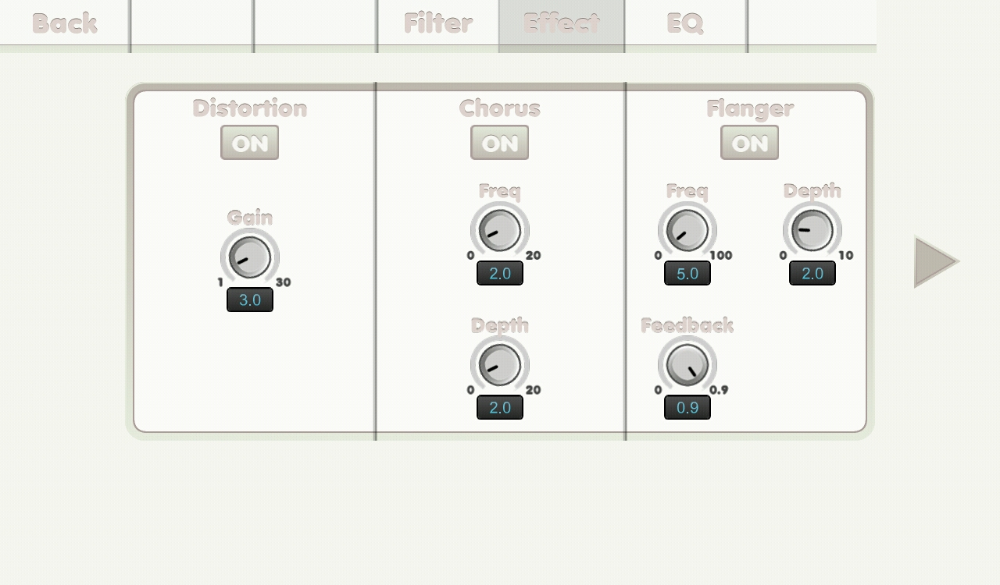

{% include JB/setup %}
Effect screen(1)

- Back tab: back to previous main screen.
- Filter tab: read you to filter screen.
- EQ tab: read you to eq screen.
- ON button: to turn the effect on.
- Gain knob: gain.
- Frequency knob: frequency.
- Depth knob: depth.
- Feedback knob: feedback.
- Swipe horizontally to go to another page.